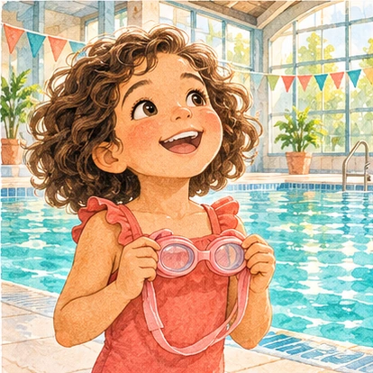
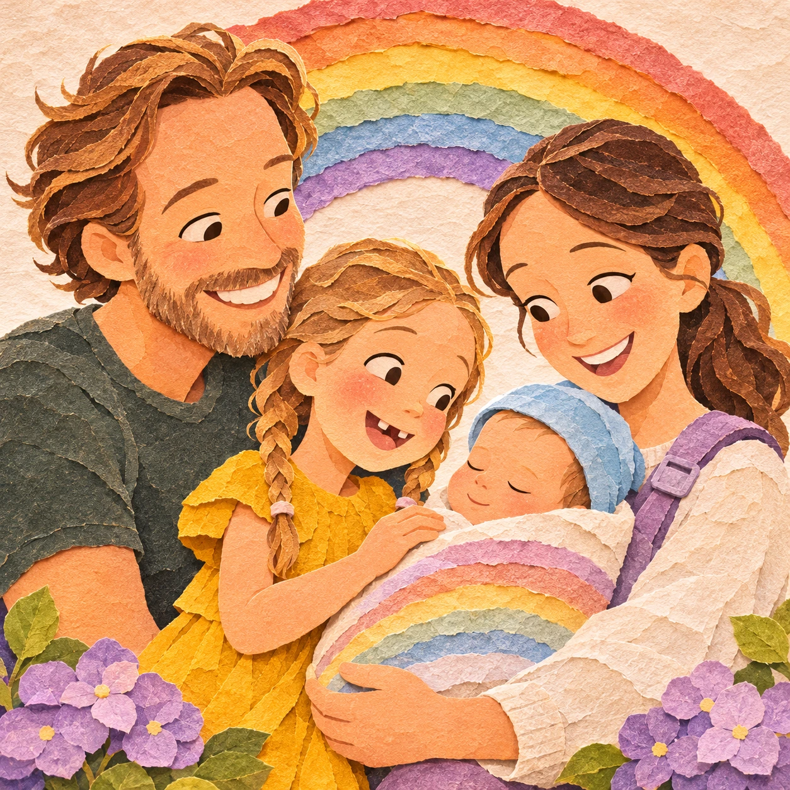
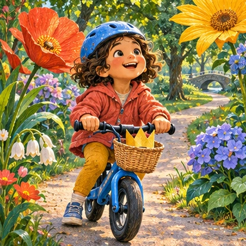

A LITTLE DESIGN EXPLORATION
Ten little worlds.
One very special reader.
Three stories about Miri. Ten very different places to read them. Make yourself comfortable, open a book, and see what feels like home.
Find your favorite world ↓iPad firstPhone friendlyMade for reading together



Small stories.Big love.
THE COLLECTION
Find your kind of storytime.
SAME STORIES. DIFFERENT FEELING.
The little things stay the same.
Every design includes all three complete books, favorites saved in this browser, and a reader that adapts to your screen. Try a page turn in each book: a watery ripple, a flutter of paper, and a classic turn.
Meet the three stories ↗